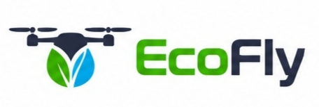

SOSTENIBILIDADLa sostenibilidad empieza en nuestro día a día
Recordemos reducir el consumo de papel, separar los residuos y priorizar el mantenimiento y la reparación de los equipos.
Nuestros compromisos →Bienvenido al espacio interno de ECOFLY. Aquí encontrarás los documentos, avisos y recursos que necesitamos para avanzar en equipo.
Tecnología sostenible
al servicio de la agricultura

SOSTENIBILIDADRecordemos reducir el consumo de papel, separar los residuos y priorizar el mantenimiento y la reparación de los equipos.
Nuestros compromisos →El proceso de bienvenida incluye la presentación del equipo, las funciones del puesto, los canales internos y la formación inicial en seguridad.
Ver protocolo →Antes de las tareas de campo o taller, revisa las instrucciones aplicables y utiliza los equipos de protección individual necesarios.
Consultar PRL →Consulta los principales manuales y recursos de trabajo.
Normas de comportamiento, comunicación y actuación profesional.
Contenido del proyectoReferencia para las tareas de campo, taller y manejo de equipos.
Archivo por vincularPasos para dar la bienvenida y acompañar a nuevas incorporaciones.
Contenido del proyectoOrientaciones para ofrecer un trato claro, cercano y profesional.
Contenido del proyectoCompromisos con las personas, el entorno y la responsabilidad ambiental.
Contenido del proyectoPlanificación, medios, horarios y protocolo de eventos corporativos.
Archivo por vincularNo hay documentos que coincidan con la búsqueda.
ECOFLY combina drones, sensores y análisis de datos para ayudar a los agricultores a cuidar los cultivos con mayor precisión y utilizar los recursos de forma responsable.
Tecnología orientada a resolver necesidades reales del campo.
Uso eficiente del agua, reducción de desperdicios y reparación de equipos.
Soluciones fiables y aplicación localizada de los recursos agrícolas.
Cercanía y acompañamiento a agricultores y profesionales del sector.
Facilitar una agricultura más eficiente mediante tecnología de precisión y una gestión responsable de los recursos naturales.
Ser un referente en soluciones tecnológicas sostenibles para la agricultura y la conservación de los ecosistemas.
Consulta aquí los contactos profesionales y responsables de cada área.
Jornada de cohesión y trabajo en equipo. Fecha y horario pendientes de confirmar.
Espacio para publicar futuras sesiones de formación y prevención.
Envía tus dudas, incidencias o sugerencias al equipo de ECOFLY mediante este formulario.